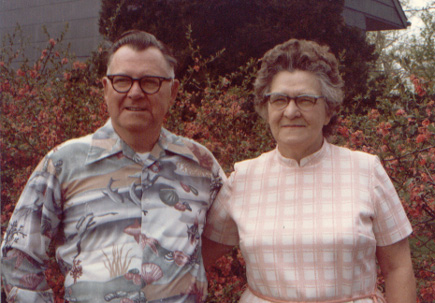

| Oliver Duffield Revis, who was known as Olie, was born April 18th, 1907 to James and Dellar Revis. He married a woman named Elizabeth, and together they had two children. They divorced, however, and Oliver married Frances Cecelia Garrison. Together they built a house in Townsend, MD, in which they lived their entire lives. Olie fought in World War II in Europe. Olie died, but Frances still lives in the house he built. |

|